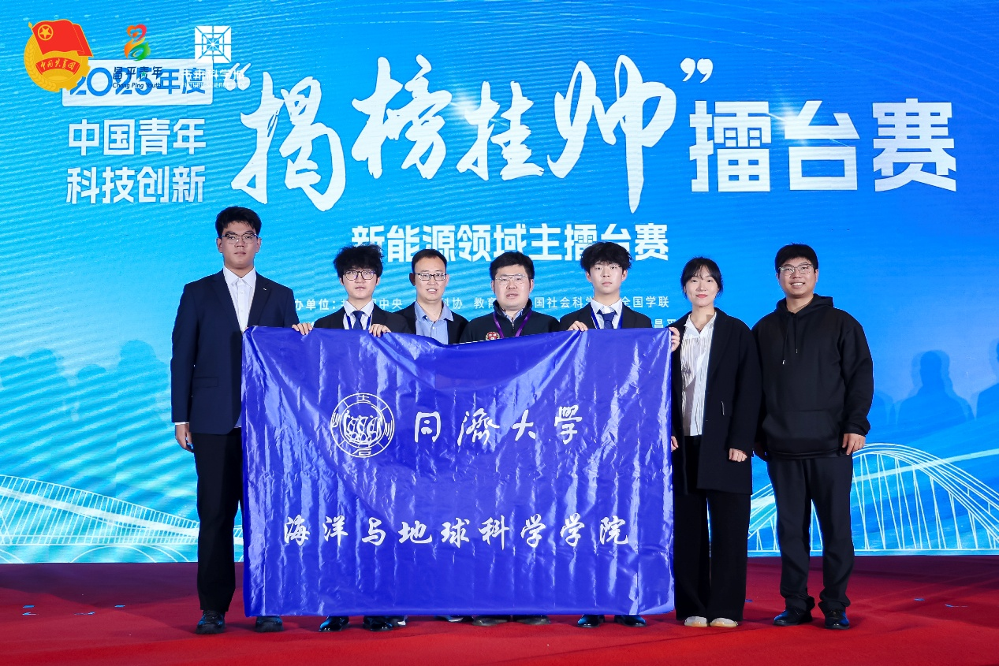
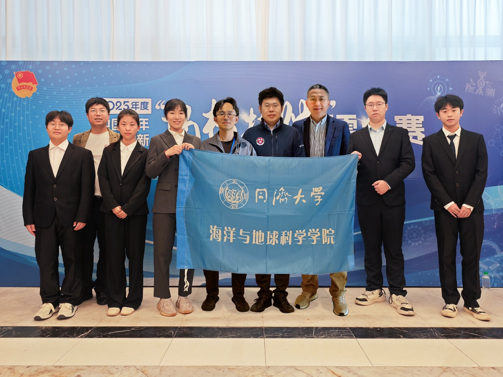
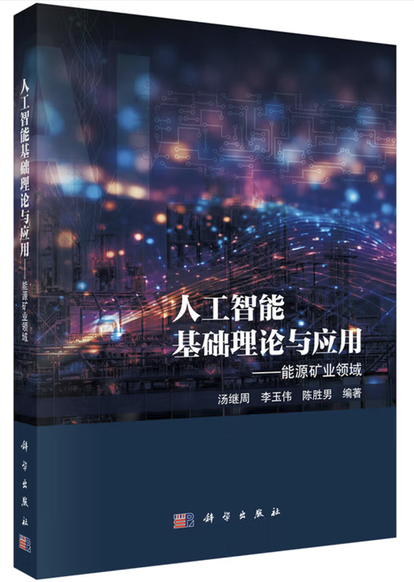
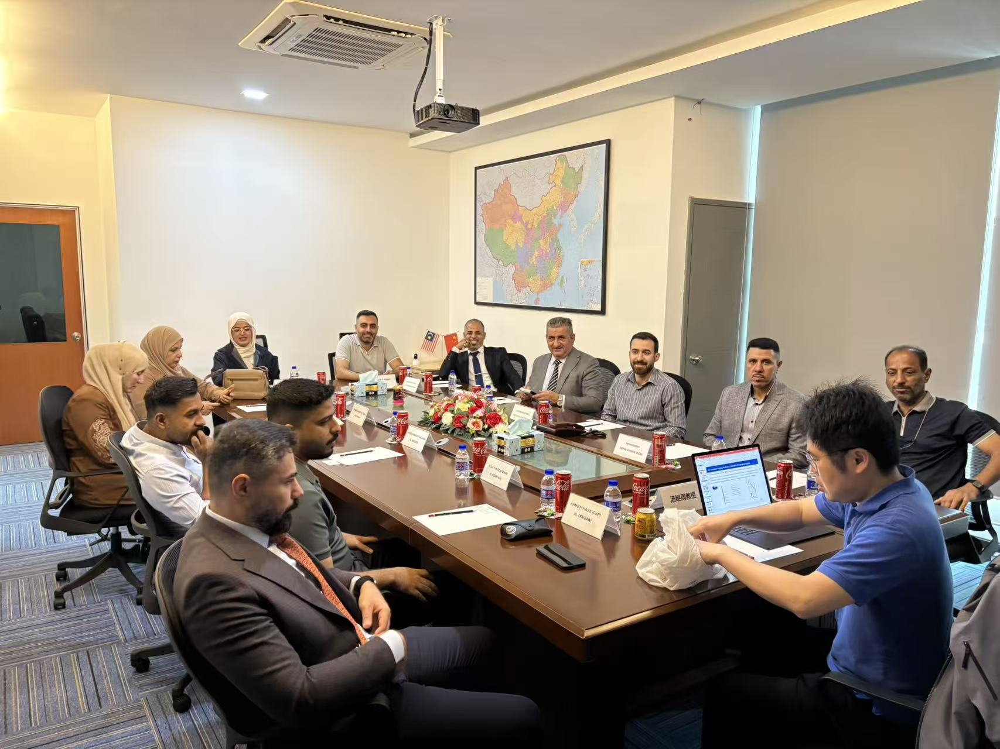
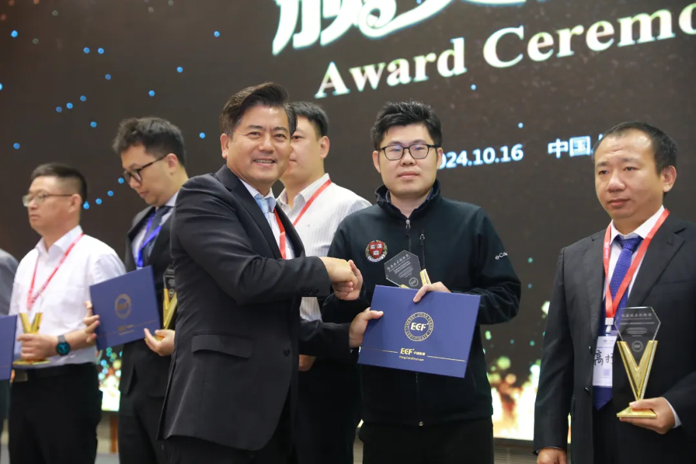

研究方向
汤继周教授长期聚焦：
- 人工智能驱动的非常规油气资源开采（页岩油气、致密油气等）
- 天然气地下高效存储（储气库）
- 二氧化碳规模化封存涉及的深部岩石力学理论和多物理场多相态耦合方法
- 主持攻克地质结构-属性刻画、水力压裂动态模拟、多相流体运移表征、油藏产能智能预测、经济效益综合评价等多项关键技术。
科研项目
1. 国家自然科学基金联合基金重点项目，《基于粘弹塑性的特深层酸压裂缝扩展机理及形态表征方法》，2025/01-2029/12，主持
2. 新型油气勘探开发国家科技重大专项·青年科学家项目，《多模态跨尺度测井数据智能融合算法研究》，2025/07-2030/12，主持
3. 国家自然科学基金优秀青年科学基金项目（海外），2021/01-2023/12，主持
4. 国家自然科学基金地震科学联合基金重点支持项目，《长宁页岩气开发区地震活动性实时监测与机理研究》，2022/01-2026/12合作方负责人
5. 中国石油天然气集团有限公司科技创新基金项目，《多模式压裂裂缝竞争扩展机理与多相态耦合效应研究》，2022/01-2024/12，主持
6.
上海市经信委新一代通用人工智能创新任务揭榜挂帅，《基于知识图表征与数-模联动的深地能源开采及CO₂协同封存关键方法研究》，2025/06-2027/06，主持
开设课程
主讲课程：
- 《地球物理测井》（本科生）
- 《岩石物理与地质力学》（硕士/博士研究生）
- 《深度学习与人工智能基础及其在地球物理中的应用》（硕士/博士研究生，承担部分）
课题组新闻

课题组获25年挑战杯"揭榜挂帅"新能源赛道特等奖

课题组获25年挑战杯"揭榜挂帅"人工智能赛道特等奖

汤继周教授出版教材《人工智能基础理论与应用-能源矿业领域》

汤继周教授前往伊拉克为当地专家培训，响应一带一路建设

汤继周教授获"ECF能源技术创新奖（国际奖）"